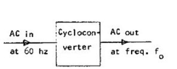

A cycloconverter or a cycloinverter converts an AC waveform, such as the mains supply, to another AC waveform of a lower frequency, synthesizing the output waveform from segments of the AC supply without an intermediate direct-current link. Cycloverters are used in very large variable frequency drives, with ratings of several megawatts. They are used in the induction heating, and in high power applications. A cycloconverter is a type of power controlled in which an alternating voltage at supply frequency is converted directly to an alternating voltage at load frequency without any intermediate d.c stage. A cycloconverter is to controlled through the timing of its firing pulses, so that it produces analternating output voltage. By controlling the frequency and depth of phase modulation of the firing angles of the converters, it is possible to control the frequency and amplitude of the output voltage.

Thus, a cycloconverter has the facility for continuous and independent control over both its output frequency and voltage. This frequency is normally less than 1/3 of the input frequency. The quality of output voltage wave and its harmonic distortion also impose the restriction on this frequency. The distortion is very low at low output frequency. Cycloconverter eliminates the use of flywheel because the presence of flywheel in machineincreases torsional vibration and fatigue in the component of power transmission system. There are presently two main applications for the cycloconverter. In first application area, the Cycloconverter is used as a variable frequency variable speed drives for AC machines. The input of the cycloconverter is connected to a power supply with fixed frequency and the machine to be driven is connected to the outputof the cycloconverter. In the second application area, in contrast, the cycloconverter is used to provide constant frequency power output from avariable frequency power source. Due to the power capability of the devices and the upper frequency limitation of the output, it is possible to use the thyristor line-commutated cycloconverters to control low speed but very large horsepower motors.
 by
by